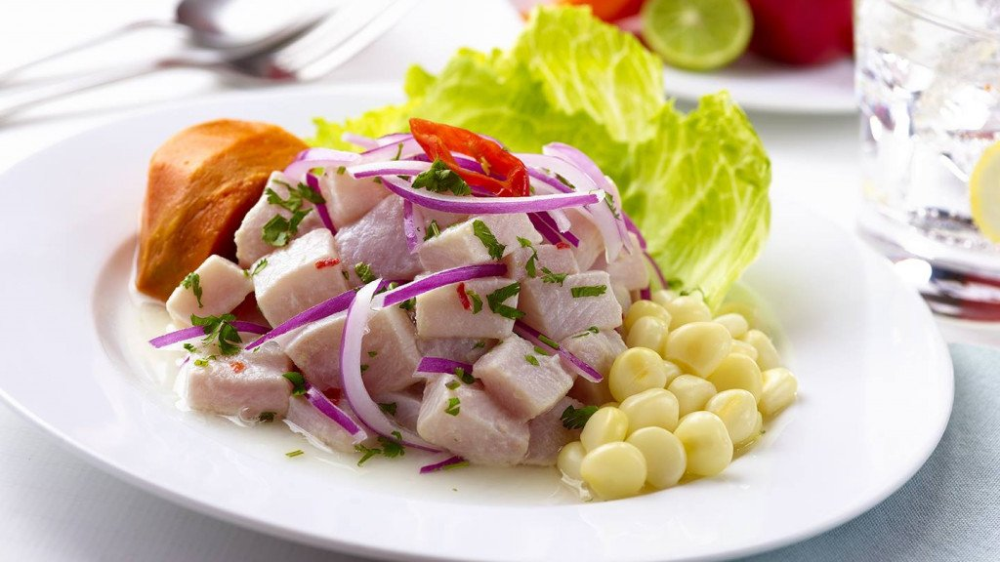
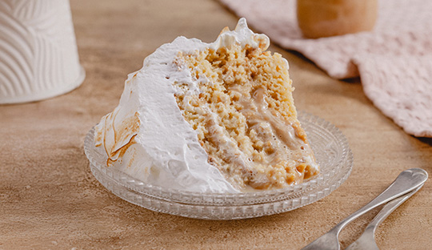
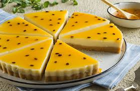
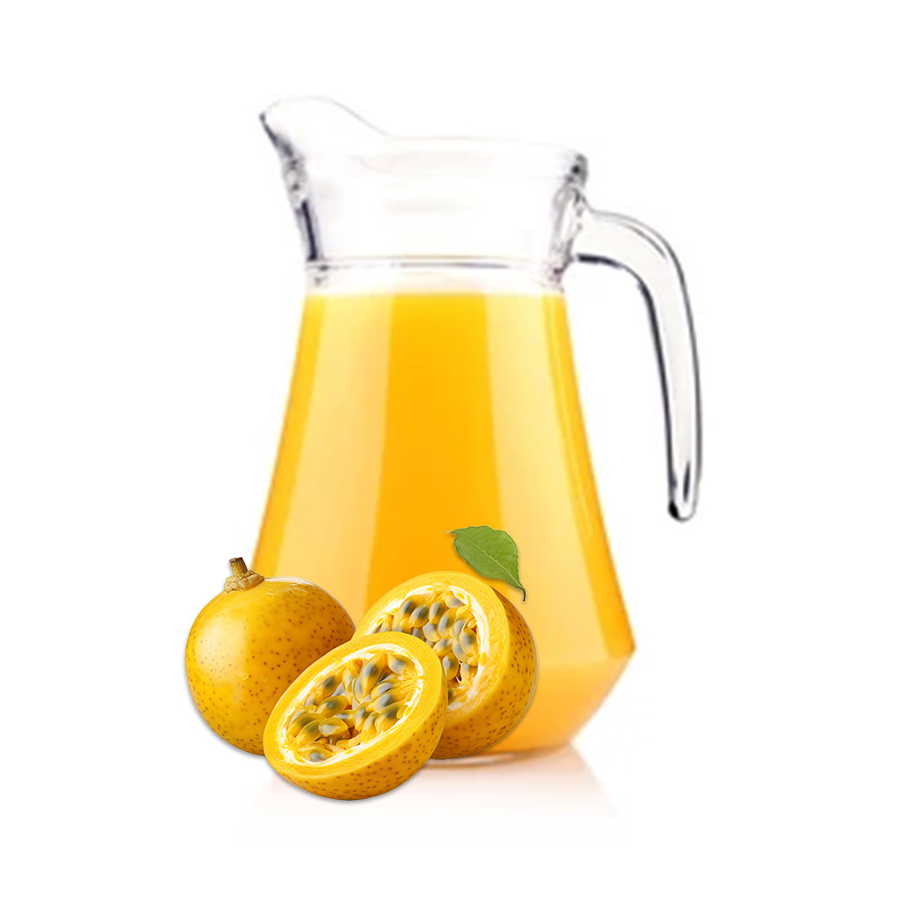
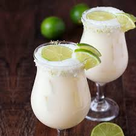

Lomo Saltado
Delicioso plato bandera preparado al wok.

Ingredientes:
- Carne de res "lomo fino".
- Cebolla roja y tomates.
- Sillao, vinagre y especias.
- Papas fritas y arroz blanco.
Delicioso plato bandera preparado al wok.
Ingredientes:
Pescado fresco marinado en limón puro.

Ingredientes:
Suave masa de papa con un toque picante y cítrico.

Ingredientes:
Postre casero con aroma a canela.

Ingredientes:
Bizcocho esponjoso extremadamente húmedo.

Ingredientes:
Base crocante con una crema de queso y fruta de la pasión que es la Maracuyá.

Ingredientes:
Rollos de canela horneados con un glaseado cremoso.

Ingredientes:
Bebida ancestral a base de maíz morado.

Ingredientes:
Refresco natural muy refrescante.

Ingredientes:
Refrescante bebida granizada con un toque de menta.

Ingredientes: